Wenzel Massag
It's our vision of the future that guides our decisions towards itself.
Our present is just the result.
It's our vision of the future that guides our decisions towards itself.
Our present is just the result.
It took me quite a few approaches to find the right way to decompose this:
In what way might we decrease “battery-anxiety” when there is no power available to recharge.
Eventually I decomposed it into user actions/steps:
You charge your device then enter the cycle of storing it, and using it repeatedly until you end up with an empty battery.
I decided to take the time that was storing and use it to charge the battery, the two decomposed questions I then asked were:
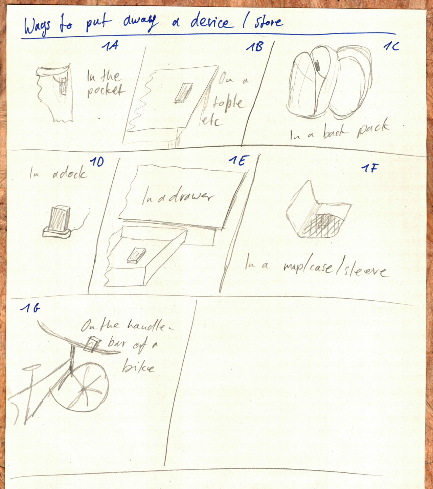
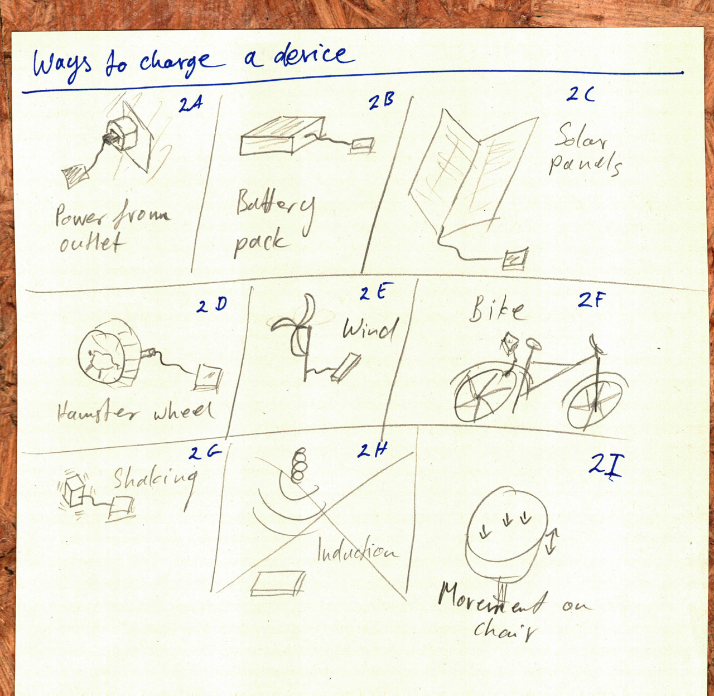
And following are the 10 concepts I came up with. I have a favorite, the bag, so it was especially difficult to think outside that box…
A A battery pack with a solar panel to keep the charge up longer.
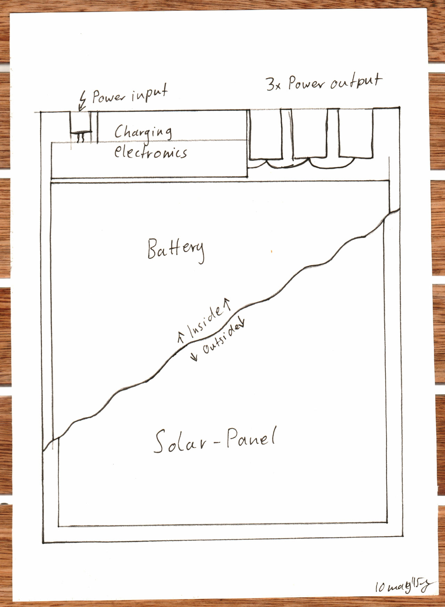
B A concept that utilizes the wasted energy of a hamster wheel to charge your phone etc.
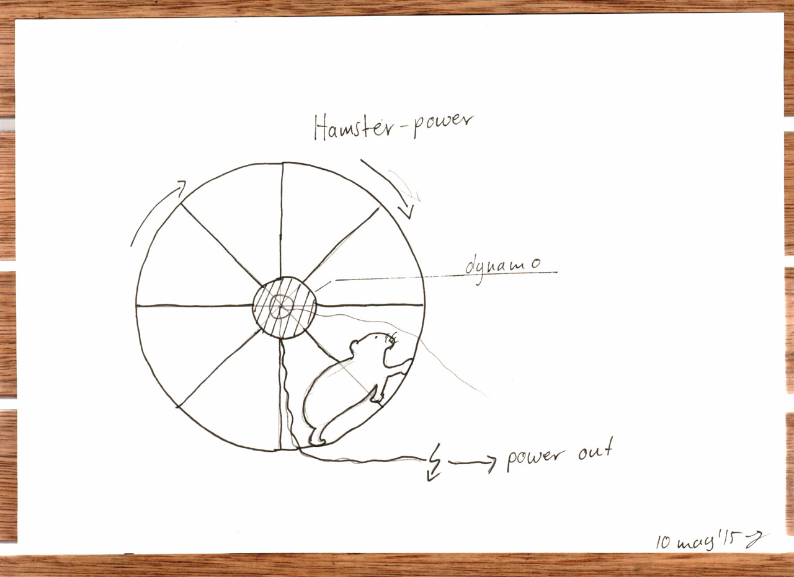
C A way to charge your phone and other devices using the power generated by the dynamo of your bike.
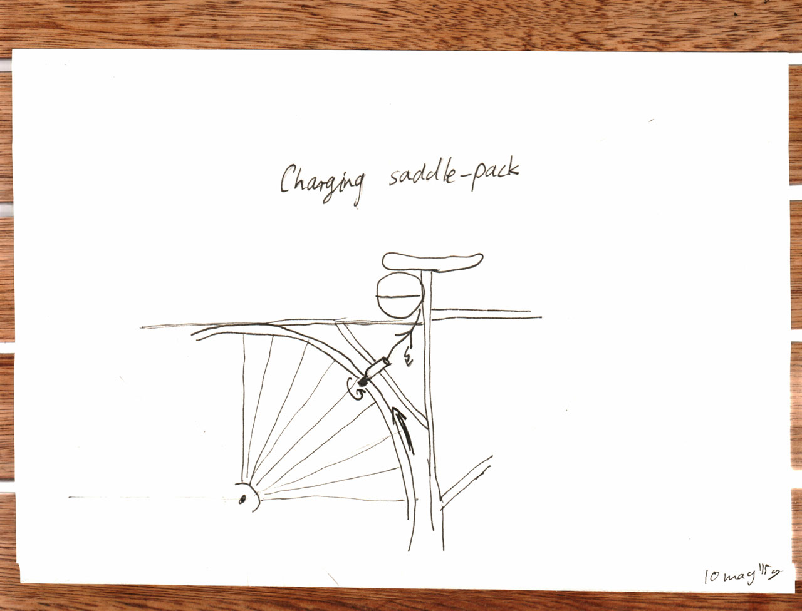
D A regular dock and a charger.
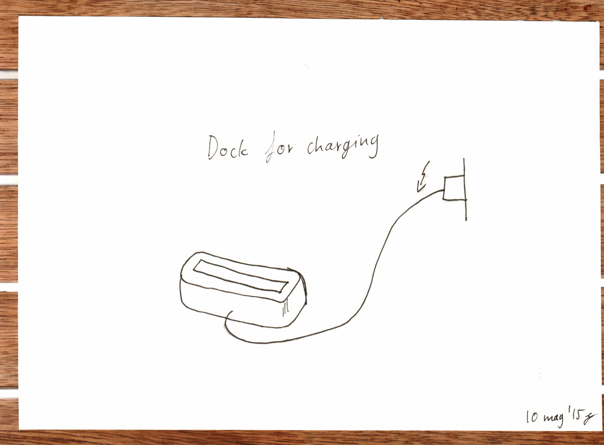
E A leather sleeve letter sized with a solar panel on the outside, a battery inside and a pocket for your phone.
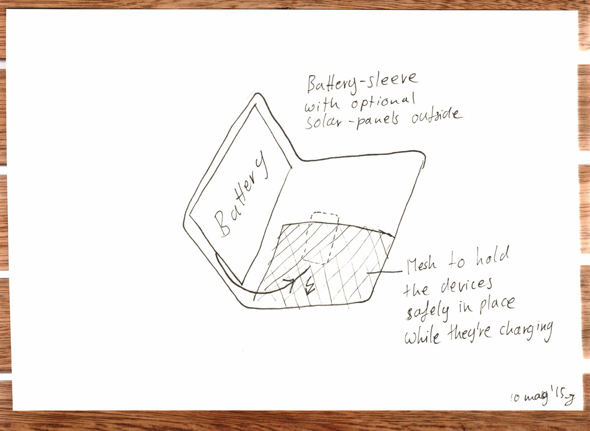
F Simply attach this to your bike's handle bar and plug your phone into the wind power.
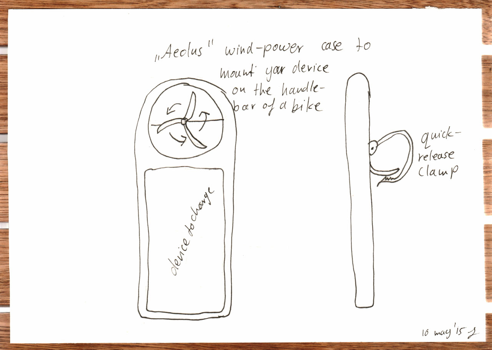
G An unconventional chair, it creates electricity from the movements you make and charges your phone with it.
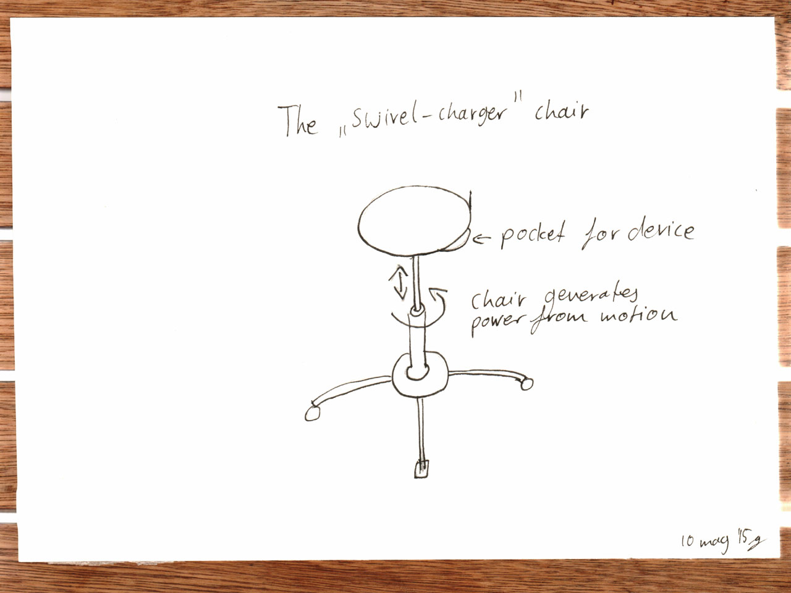
H My favorite (see gap site for more). A bag with a solar panel on the lid and a battery in the bottom. You can open it all the way to use it as a notebook stand while it's recharging through it's solar panels.
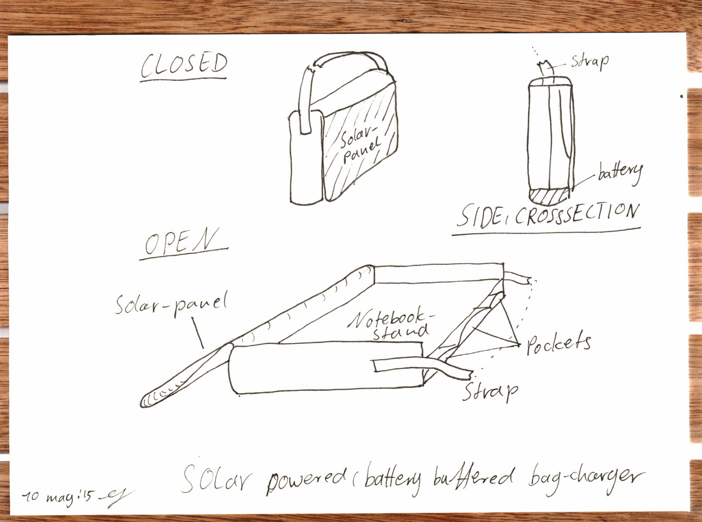
I A battery pack that generates power from being shook up and down while walking for example.
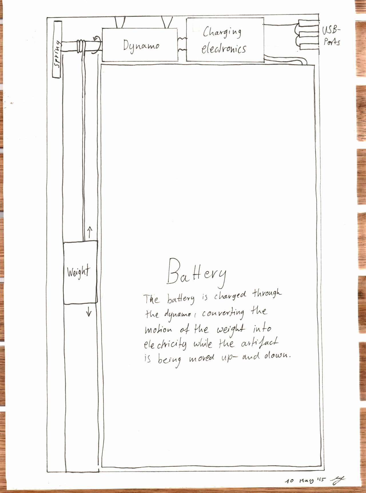
J My second favorite concept: A clip on solar panel that simply has a USB outlet to plug anything into it that fits inside your pocket!
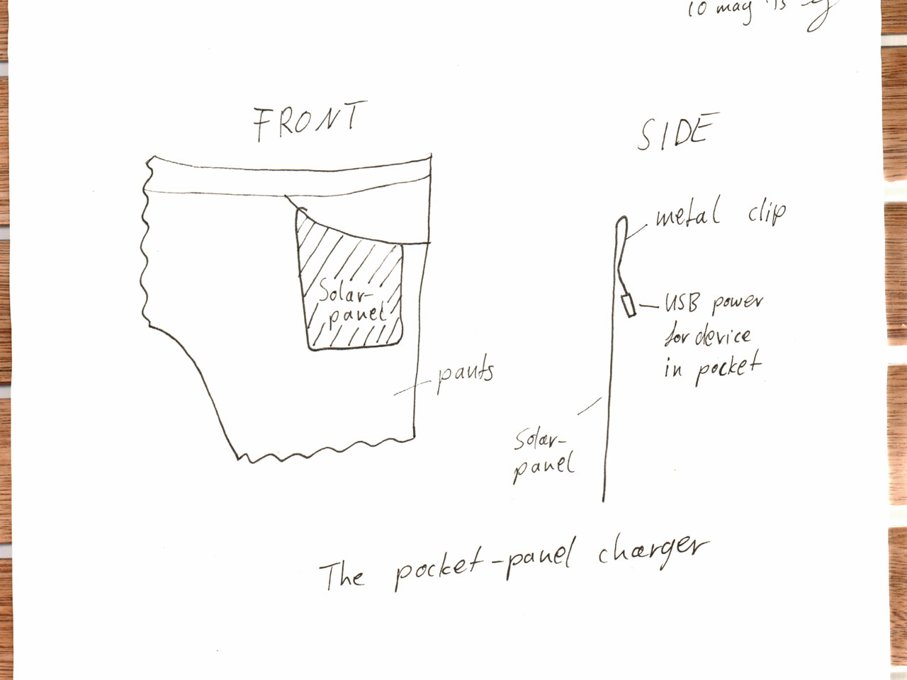
Sketch of a chair correctly in 2 point perspective (three quarter view)
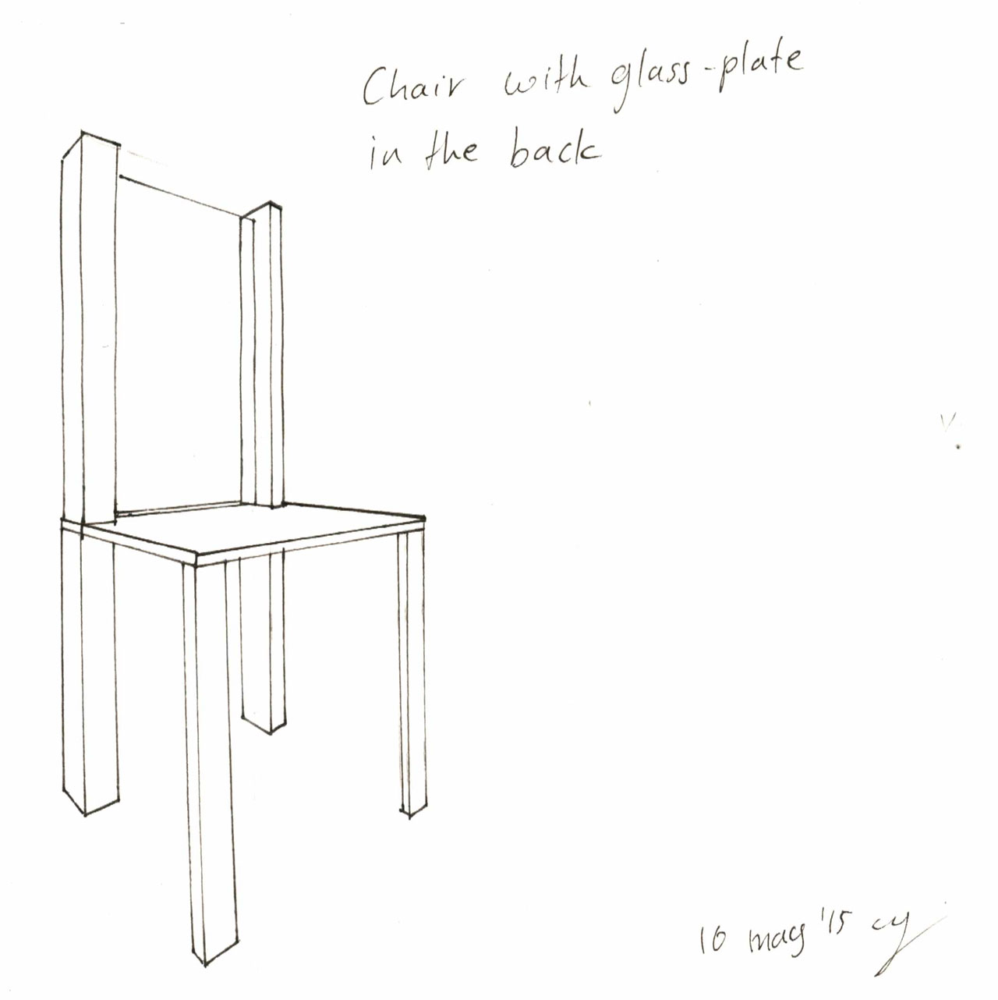